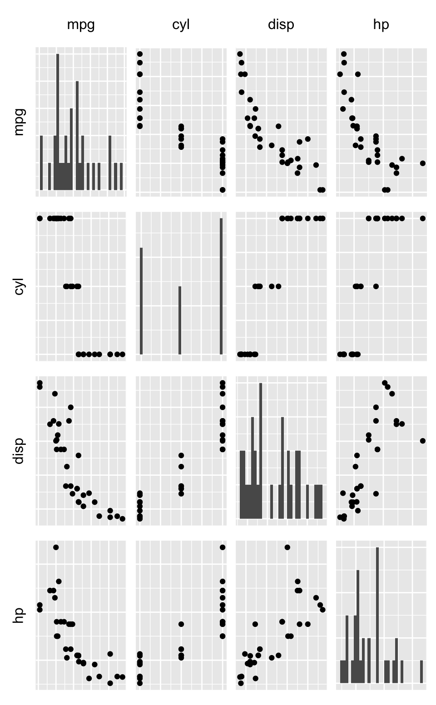
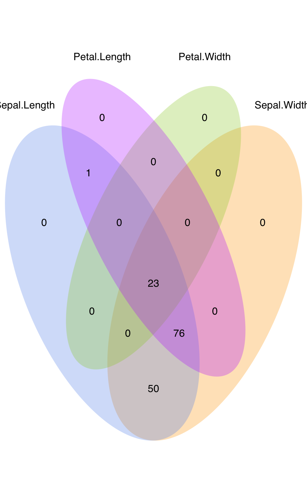

Plotting functions
Diego Diez
2018-04-26
Introduction
Required packages for building this vignette:
## Warning: replacing previous import 'dplyr::vars' by 'ggplot2::vars' when
## loading 'q3tools'## Warning: replacing previous import 'ggplot2::exprs' by 'Biobase::exprs'
## when loading 'q3tools'


Pairs
A paired scatterplot.
## `stat_bin()` using `bins = 30`. Pick better value with `binwidth`.
## `stat_bin()` using `bins = 30`. Pick better value with `binwidth`.
## `stat_bin()` using `bins = 30`. Pick better value with `binwidth`.
## `stat_bin()` using `bins = 30`. Pick better value with `binwidth`.
## `stat_bin()` using `bins = 30`. Pick better value with `binwidth`.
## `stat_bin()` using `bins = 30`. Pick better value with `binwidth`.
## `stat_bin()` using `bins = 30`. Pick better value with `binwidth`.
## `stat_bin()` using `bins = 30`. Pick better value with `binwidth`.


Venn diagrams
A venn diagram.
plotVenn(
iris[, -5] > 2,
fill = c("cornflowerblue", "orange", "darkorchid1", "yellowgreen"),
alpha = .3,
col = NA
)
Gene tracks
A gene track.
# plot some gene.
plotGene("Stat1", "mm10")
# add some data.
f <- system.file("files/example.bam", package = "q3tools")
plotGene("Stat1", "mm10", add.data = list("Exo+" = f))
# zoom in.
plotGene("Stat1", "mm10", add.data = list("Exo+" = f), from = 52.12e6, to = 52.14e6)The above code may fail if the genome version at Biomart differs from the version expected by Gviz, the underlaying package used by plotGene. In that case, the biomart object mast be specified directly. In that case, the argument genome is ignored.
library(biomaRt)
mart <- useMart(biomart = "ensembl", dataset = "mmusculus_gene_ensembl")
f <- system.file("files/example.bam", package = "q3tools")
plotGene("Stat1", biomart = mart, add.data = list("Exo+" = f), from = 52.12e6, to = 52.14e6)
Ranges
A set of ranges.
## IRanges object with 5 ranges and 0 metadata columns:
## start end width
## <integer> <integer> <integer>
## [1] 1 4 4
## [2] 7 12 6
## [3] 10 15 6
## [4] 5 8 4
## [5] 13 14 2If we have GRanges we have to specified the seqname.
# create GRanges from IRanges.
tmp <- GRanges(seqnames = c(1,1,2,2,2), ranges = tmp)
plotRanges(tmp, seqnames = "1")